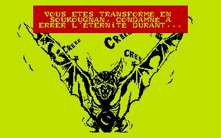
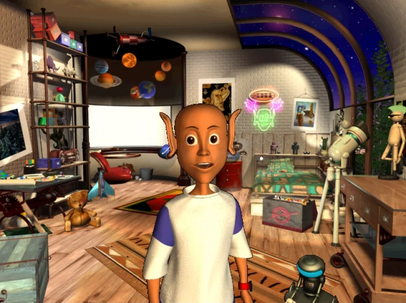
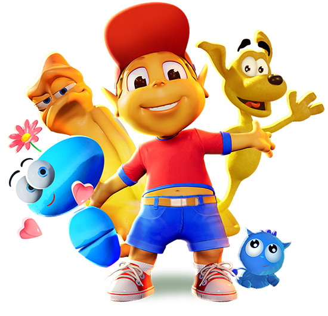

Méwilo: 1987
Méwilo est le premier jeu vidéo conçu par Muriel Tramis. Le scénario s'inspire d'une légende martiniquaise, la "légende des jarres d'or",
selon laquelle, au plus fort des révoltes d'esclaves, les maîtres des plantations sauvaient leur or de la pire façon: ils partaient l'enterrer
au loin en faisant creuser un trou par leur plus fidèle esclave; puis ils le tuaient et l'ensevelissaient avec pour que le fantôme du malheureux
garde le trésor en éloignant les curieux.

La trilogie Gobliiins: 1991-1993
Dans le premier épisode, retrouvez les aventures de Oups, Asgard et Ignatus partis à la recherche d'un remède pour soigner le roi Angoulafre. Chacun des personnages possédant des aptitudes qui lui sont propres,
il vous sera indispensable de les incarner à tour de rôle pour pouvoir venir à bout des différents niveaux.
Dans le second volet, deux goblins ont pour mission de retrouver et libérer le Prince. Il vous faudra une fois de plus alterner entre deux personnages diamétralement opposés pour arriver à vos fins ! Enfin, le dernier titre,
et certainement le plus farfelu, met en scène un journaliste gobelin chargé d'un reportage sur le conflit opposant la reine et le roi. C'était sans compter sur un atterrissage forcé qui va chambouler sa vie, puisqu’il va tomber amoureux de la princesse Winona et se retrouver lui-même au sein du conflit,
puis être mordu par un loup garou… Et vous n’êtes pas au bout de vos surprises !
Adibou
En 1990, les Français font la connaissance d'un extraterrestre aux oreilles démeusurées. Prénommé ADI (pour "Accompagnement Didactitiel Intelligent"), c'est la mascotte d'une gamme de logiciels éducatifs réalisés par Coktel Vision et qui permettent de réviser le français,
les mathématiques et l'anglais pour des niveaux allant du CE1 à la 3e. Innovant, le concept rencontre un large succès commercial en France puis en Europe, si bien qu'en 1992 il est même décliné pour ls enfants de 4 à 7 ans sous le nom d'Adibou,
série de jeux dont le héros à la casquette rouge a marqué toute une génération.

